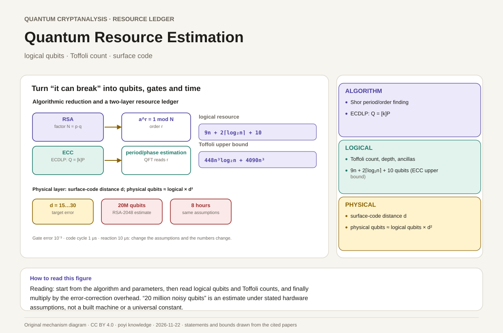
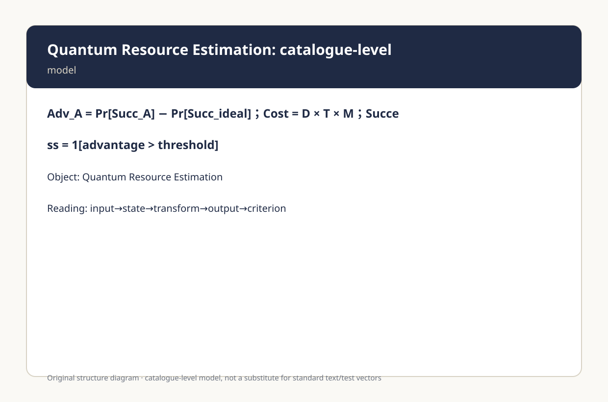

Principles
Attack: Quantum Resource Estimation (量子资源估算). ### From algorithm to resources
Shor’s algorithm reduces integer factoring to order finding: choose a, find the least r>0 with a^r ≡ 1 (mod N), then use gcd(a^{r/2}±1,N) to obtain a factor. Elliptic-curve discrete logarithm reduces to period finding: given Q=[k]P, find k. The quantum circuit contains controlled modular exponentiation or point addition, a quantum Fourier transform and its inverse. ### The resource ledger
A resource estimate is not just “how many qubits”. It must separate logical qubits, Toffoli (or T) counts, circuit depth, ancilla qubits, measurement and initialisation counts, and the physical qubits and runtime needed for fault-tolerant error correction. For ECC over an n-bit prime field, Roetteler et al. give the upper bounds
9n + 2⌈log₂n⌉ + 10 logical qubits, 448 n³ log₂n + 4090 n³ Toffoli gates. ### Physical overhead
A surface code encodes each logical qubit in a d×d physical patch, where the distance d is chosen for the target error rate; physical qubit count grows roughly as d², and runtime is constrained by the code cycle, measurement feedback and magic-state distillation. Gidney and Ekerå’s RSA-2048 estimate uses 20 million noisy qubits and 8 hours, explicitly assuming a 10⁻³ gate error rate, a 1 μs code cycle and a 10 μs reaction time. Change the assumptions and the numbers change.

Why it matters
“A quantum computer can break RSA” is an algorithm-level statement; “2048-bit RSA can be broken before a given year” needs a physical-layer ledger. Resource estimation separates the two and lets migration plans discuss parameters, time windows and uncertainty instead of a slogan.
NIST post-quantum migration does not start when a quantum computer appears. Key sizes, certificate chains, protocol handshakes and hardware accelerators must be changed in advance. Resource estimates help identify which parameters are most exposed (for example, ECC often needs fewer qubits than RSA at a comparable security level) and which “quantum-safe” proposal merely changes the mathematical assumption.
A resource estimate is an upper or lower bound under stated hardware assumptions, not a calendar prediction. It does not show that a machine exists, and it does not extrapolate a laboratory demonstration into an Internet-scale attack.
Applications
- Identify the algorithm, key length, certificate lifetime and data-confidentiality horizon to protect. 2. Read the logical-resource tables in the original paper: qubits, Toffoli counts, depth and ancillas. 3. Convert to physical resources using the target hardware’s error rate, code distance, code cycle and magic-state distillation cost. 4. Combine several independent estimates into an interval; do not turn one point estimate into a fixed date. 5. Feed the result into a crypto-agility plan: hybrid key exchange, certificate rotation, performance budget and rollback.
NIST post-quantum standardisation, national migration roadmaps and industry assessments use resource estimates as inputs. They focus on “within what time window and at what cost” migration must happen, not on proving that a particular machine does not exist.

Limits & attacks
- Treating logical qubits as physical qubits underestimates error-correction overhead by orders of magnitude. 2. Treating asymptotic complexity as a constant ignores coefficients, ancillas and data movement. 3. Ignoring fault-tolerance assumptions: gate error, code distance, measurement speed, magic-state distillation and connectivity all change the ledger. 4. Treating an algorithmic upper bound as a lower bound: “at most” does not mean “at least”. 5. Extrapolating a small laboratory demonstration into a large-scale attack: a small circuit is not a scalable fault-tolerant machine. 6. Ignoring the classical side: data collection, linear algebra, post-processing and the time window also consume resources.
A resource estimate is neither a security proof nor a threat prophecy. It is a reviewable cost model; every number must be cited with its algorithm, parameters, error-correction scheme and hardware assumptions. “How many qubits” without those assumptions is meaningless.
History
Shor’s 1994 polynomial-time quantum algorithms for factoring and discrete logarithms turned the quantum threat from speculation into an algorithmic fact. Early estimates focused on logical qubits and gate counts; later work brought fault tolerance, surface codes, magic-state distillation and parallelism into the ledger.
Roetteler, Naehrig, Svore and Lauter gave gate-level upper bounds for ECC discrete logarithms in 2017 and noted that, at comparable security levels, ECC usually needs fewer qubits than RSA. Gidney and Ekerå advanced the RSA-2048 estimate in 2021 to an engineering scenario of “8 hours, 20 million noisy qubits”, with an explicit list of hardware assumptions.
Worked example & verification
Formal model and reproduction steps
[Q=\Theta!\left(\sqrt{|\mathcal{K}|}\right)=\Theta(2^{\kappa/2})]
Quantum Resource Estimation: the registered public parameters, key material or randomness, and message are mapped through the stated transformation to an output checked against the registered criterion. The worked example is a structural reproduction, not a new test vector; parameter ranges, standard versions and implementation details remain source-bound.
References
- Wikipedia search entry for 量子资源估算. https://zh.wikipedia.org/w/index.php?search=%E9%87%8F%E5%AD%90%E8%B5%84%E6%BA%90%E4%BC%B0%E7%AE%97
- Handbook of Applied Cryptography (Menezes, van Oorschot, Vanstone). https://www.cacr.math.uwaterloo.ca/hac/